<!DOCTYPE html>
<html>
<head>
	<meta charset="utf-8">
	<meta name="viewport" content="width=device-width">
	<title>Help FAQ</title>
	<link href="faq.css" rel="stylesheet">
	<style>
		body {width: 80%;}
		img {border: 1px solid black; width: 300px;}
		summary {background-color: white;}
		details {background-color: lightgrey;}
	</style>
</head>

<!-- 
	FIRST CATEGORY: Créer et modifier son compte 
-->

<!-- Créer un compte -->
<details>
	<summary>Créer un compte</summary>
	<iframe width="280" height="157,5" src="https://www.youtube.com/embed/videoseries?list=PLu6bZF5fHBVOPGZ7iwKK-HRkf58-s7IU4" frameborder="0" allow="autoplay; encrypted-media" allowfullscreen></iframe>
</details>

<!-- Administrer mon profil -->
<details>
	<summary>Administrer mon profil</summary>
	<iframe width="280" height="157,5" src="https://www.youtube.com/embed/QmUabjqlYH8" frameborder="0" allow="autoplay; encrypted-media" allowfullscreen></iframe>
</details>

<!-- 
	SECOND CATEGORY: Packs numériques 
-->

<!-- 1. Qu'est-ce que le pack numérique -->
<details>
	<summary class="question">Qu’est ce que le pack numérique enseignant ?</summary>
	<p class="answer"></p>
	<ol>
		<li>L’ensemble des ressources de la collection :</li>
			<ul>		
				<li>le manuel en version vidéoprojetable</li>
				<li>le cahier d’activités en version vidéoprojetable, interactive et autocorrective</li>
				<li>les audios et vidéos classe sont protégés et accessibles uniquement sur le manuel numérique 
					(en cliquant sur les onglets CD et vidéos visibles au fil des pages). 
					Il n'est pas possible de les télécharger pour les utiliser hors du manuel.</li>
				<li>le livre du professeur en version pdf</li>
			</ul>
		<li>Des supports complémentaires pour faciliter la mise en œuvre de certaines activités : selon les collections, accédez à des fiches vidéoprojetables / imprimables d’aide à la réalisation de certaines activités, des cartes mentales à compléter, des vidéos supplémentaires, des exercices interactifs, des fiches lexicales, des fiches d’évaluation, etc.</li>
		<li>Des outils de gestion de classe pratiques et simples à utiliser*</li>
		<ul>			
			<li>création de groupes d’élèves : vous pouvez créer des groupes et y inviter vos élèves</li>
			<li>visualisation des résultats : vous avez la possibilité de voir les résultats de chaque élève ou groupe, et de les télécharger dans un rapport au format pdf</li>
			<li>envoi de messages : vous pouvez envoyer des messages aux élèves inscrits dans vos groupes et leur donner ou non la possibilité de vous répondre</li>
			<li>partage de ressources : vous pouvez partager les supports de votre choix avec vos élèves ou groupes</li>
		</ul>
	</ol>
	<p class="answer"><em>* Attention : ces options ne sont pas disponibles pour les manuels préenregistrés sur clé USB.</em></p>
</details>

<!-- 6. Puis-je copier mon manuel... -->
<details>
	<summary class="question">Puis-je copier mon manuel ou pack numérique sur clé USB ?</summary>
	<p class="answer">Il n’est pas possible d’effectuer des copies sur clé USB des ouvrages numériques publiés à partir d’août 2017 :</p>
		<ul>
			<li>Reporteros 5e (version 2017)</li>
			<li>Reporteros 4e</li>
			<li>Reporteros 3e</li>
			<li>Fantastisch! 1re année (version 2017)</li>
			<li>Fantastisch! 2e année</li>
			<li>Fantastisch! 3e année</li>
			<li>Bloggers 6e</li>
			<li>Bloggers 5e</li>
			<li>Bloggers 4e</li>
			<li>Bloggers 3e</li>
			<li>Team Deutsch NEU! Lycée Tle</li>
			<li>Together 6e</li>
			<li>Together 5e</li>
			<li>Together 4e</li>
			<li>Together 3e</li>
			<li>Alternativas 2de</li>
			<li>Alternativas 1re </li>
			<li>Community 2de</li>
			<li>Community 1re</li>
		</ul>
	<p class="answer">En revanche, les manuels ou packs numériques publiés à partir d’août 2017 peuvent s’installer sur autant de postes que vous le souhaitez. Par exemple, si vous avez six salles de classe, vous pouvez installer votre manuel numérique dans chaque salle pour y avoir ainsi accès à six endroits différents. Nous vous rappelons cependant que les licences numériques sont strictement personnelles et ne permettent la connexion que d’un seul utilisateur à la fois. Chaque professeur doit donc avoir sa propre licence.<br>
	Vous pouvez également vous procurer les manuels ou packs numériques publiés à partir d’août 2017 directement sur clé USB :</p>
		<ul>
			<li>Bloggers 6e</li>
			<li>Bloggers 5e</li>
			<li>Bloggers 4e</li>
			<li>Bloggers 3e</li>
			<li>Reporteros 5e (version 2017)</li>
			<li>Reporteros 4e</li>
			<li>Reporteros 3e</li>
			<li>Fantastisch! 1re année (version 2017)</li>
			<li>Fantastisch! 2e année</li>
			<li>Fantastisch! 3e année</li>
			<li>Team Deutsch NEU! Lycée 2de</li>
			<li>Team Deutsch NEU! Lycée 1re</li>
			<li>Team Deutsch NEU! Lycée Tle</li>
		</ul>
	<p class="answer">À l’exception des outils de gestion de classe, auxquels elle ne donne pas accès, la clé USB contient exactement les mêmes ressources que le pack numérique à télécharger. Vous pouvez la commander sur le site du <a href="www.kiosque-edu.com">Kiosque numérique de l'éducation</a> ; elle vous sera envoyée par la poste.</p>
</details>

<!-- 7. Ai-je besoin d'une connexion Internet-->
<details>
	<summary class="question">Ai-je besoin d’une connexion Internet pour utiliser le pack numérique ?</summary>
	<p class="answer">Si vous souhaitez accéder à la version en ligne du pack numérique à travers le site Internet <a href="espacelangues.emdl.fr">Espace langues</a>, vous aurez à chaque fois besoin d’une connexion Internet.<br>
	Si vous souhaitez accéder à votre pack numérique via l’application Espace langues, vous aurez besoin d’une connexion Internet pour installer l’application et télécharger le manuel et ses ressources lors de la première utilisation. Une fois cette mise en route effectuée, il ne vous sera plus nécessaire de vous connecter à Internet. <br>
	<em>Attention : sans connexion Internet, l’utilisation des outils de gestion de classe est impossible.</em></p>
</details>

<!-- 8. Le pack numérique est-il... -->
<details>
	<summary class="question">Le pack numérique est-il compatible avec mon ordinateur ?</summary>
	<p class="answer">Les packs numériques sont compatibles avec les systèmes d’exploitation suivants :</p>
	<ul>
		<li>Mac et PC</li>
		<li>Android et Ipad</li>
	</ul>
	<p class="answer">Les configurations minimales requises sont :</p>
	<ul>
		<li>Windows 7</li>
		<li>MacOS X 10</li>
		<li>iOS 10.0</li>
		<li>Android 6.0</li>
	</ul>
</details>

<!-- 9. Sous quelle forme vais-je recevoir... -->
<details>
	<summary class="question">Sous quelle forme vais-je recevoir mon pack numérique ?</summary>
	<ol>
		<b><li>Si vous commandez le pack numérique sur clé USB, vous le recevrez par la poste.</b></li>
		<b><li>Si vous commandez le pack numérique en version téléchargeable, 
		vous recevrez un courriel de notre distributeur de manuels numériques, 
		le Kiosque Numérique de l’Éducation (KNE), qui contiendra :</b></li>
			<ul>
				<li>La clé d’activation de la licence.</li>
				<li>Le lien vers la plateforme pédagogique Espace langues où vous devrez vous créer un compte, puis entrer la clé d’activation afin de pouvoir installer le manuel ou pack numérique.</li>
			</ul>
	</ol>
	<p class="answer"><em>Attention : selon les boîtes mails, il est possible que le courriel du KNE arrive dans vos courriers indésirables ; n’hésitez donc pas à vérifier.</em></p>
</details>

<!-- 10. J'ai besoin d'aide pour l'installation... -->
<details>
	<summary class="question">J’ai besoin d’aide pour l’installation de mon pack numérique. Qui puis-je contacter ?</summary>
	<p class="answer">Vous pouvez consulter l’aide en ligne du Kiosque Numérique de l’Éducation en cliquant sur <a href="https://www.kiosque-edu.com/sav/index">ce lien</a>.<br> 
	Vous pouvez également les contacter par téléphone au numéro suivant : 09 69 32 95 45.</p>
</details>

<!-- 24. Dans quelle mesure puis-je personnaliser mon manuel numérique ? -->
<details>
	<summary class="question">Dans quelle mesure puis-je personnaliser mon manuel numérique ?</summary>
	<p class="answer">Lorsque vous ouvrez un manuel numérique sur Espace langues, vous trouvez en bas de l’écran quelques boutons qui vous permettent de naviguer dans le manuel et de le personnaliser. En voici une explication détaillée.</p>
</details>

<!-- Partager des tâches associées au manuel -->
<details>
	<summary>Partager des tâches associées au manuel</summary>
	<iframe width="280" height="157,5" src="https://www.youtube.com/embed/cWsbcg5J-2k" frameborder="0" allow="autoplay; encrypted-media" allowfullscreen></iframe>
</details>

<!-- 
	THIRD CATEGORY: Prix et licences 
-->

<!-- 2. Comment se procurer le pack numérique enseignant-->
<details>
	<summary class="question">Comment se procurer le pack numérique enseignant ?</summary>
	<ol>
		<li>Connectez-vous sur www.kiosque-edu.com.</li>
		<li>Créez votre compte.</li>
		<li>Introduisez le titre que vous souhaitez vous procurer dans le moteur de recherche qui apparaît à droite de l’écran.</li>
		<li>Suivez les instructions. Vous recevrez un mail avec un lien pour vous connecter à la plateforme pédagogique Espace langues et y ouvrir votre pack numérique.</li>
	</ol>
	<p class="answer"><em>* Pour savoir comment procéder une fois votre licence achetée, consultez la rubrique : <b>14. Comment activer ma licence pour accéder à mon pack numérique enseignant.</b></em></p>
</details>

<!-- 3. Combien coûte le pack numérique enseignant -->
<details>
	<summary class="question">Combien coûte le pack numérique enseignant ?</summary>
	<table>
		<tr>
			<th colspan="3">Pack numérique téléchargeable :</th>
		</tr>
		<tr>
			<td>Tarif adoptant*</td>
			<td>licence valable 5 ans</td>
			<td>Offert</td>
		</tr>
		<tr>
			<td>Tarif adoptant</td>
			<td>licence valable 5 ans</td>
			<td>390 €</td>
		</tr>
	</table>
	<p class="answer">
	<em>*Vous êtes considéré comme adoptant si vous avez fait adopter le livre de l’élève, en version papier ou numérique, à l'ensemble des élèves d'un niveau (20 exemplaires au moins). 12. Comment puis-je bénificier du tarif adoptant auprès du KNE ?</em><br>
	<table>
		<tr>
			<th colspan="3">Pack numérique préenregistré sur clé USB :</th>
		</tr>
		<tr>
			<td>Tarif adoptant*</td>
			<td>clé USB valable à vie</td>
			<td>59 €</td>
		</tr>
		<tr>
			<td>Tarif adoptant</td>
			<td>clé USB valable à vie</td>
			<td>295 €</td>
		</tr>
	</table>
</details>

<!-- 4. Combien de licences enseignant... -->
<details>
	<summary class="question">Combien de licences enseignant sont nécessaires pour mon établissement ?</summary>
	<p class="answer">Un pack numérique enseignant est personnel. Si vous souhaitez que tous les professeurs de votre établissement utilisent l’un de nos manuels numériques, il vous faut donc autant de licences enseignant qu’il y a de professeurs dans la matière et au niveau concerné.<br>
	<em>Par exemple : si votre établissement a adopté la méthode d’anglais Bloggers 5e et souhaite que les cinq professeurs de ce niveau soient équipés du numérique, il devra se procurer cinq packs numériques enseignant.</em></p>
</details>

<!-- 5. Quelle est la durée de validité... -->
<details>
	<summary class="question">Quelle est la durée de validité de la licence de mon pack numérique ?</summary>
	<p class="answer">Toutes nos licences numériques enseignant sont valables 5 ans. <br>
	Au terme de ces cinq années, la licence arrive à expiration.<br>
	Il existe cependant quelques exceptions pour les licences suivantes, qui sont valables deux ans :
		<ul>
			<li>Fantastisch 1re année – version 2016*</li>
			<li>Reporteros 5e – version 2016*</li>
			<li>Team Deutsch NEU! Lycée 2de – version 2016*</li>
			<li>Team Deutsch NEU! Lycée 1re – version 2016*</li>
		</ul>
	<p class="answer"><em>*Si vous êtes adoptant de cette méthode et que votre licence arrive à expiration, écrivez à info@emdl.fr pour bénéficier d'une prolongation de votre licence.</em></p>
</p>
</details>

<!-- 11. Comment mon établissement peut-il se procurer les packs numériques ? -->
<details>
	<summary class="question">Comment mon établissement peut-il se procurer les packs numériques ?</summary>
	<p class="answer">Votre établissement peut se renseigner auprès de son libraire pour savoir si ce dernier fait de la vente de manuels numériques.<br> 
	Il peut également passer directement commande à partir de la page web de notre distributeur numérique, le <a href="https://www.kiosque-edu.com/.">Kiosque Numérique de l’Éducation</a>.</p>
</details>

<!-- 12. Comment puis-je bénéficier du tarif adoptant auprès du KNE ? -->
<details>
	<summary class="question">Comment puis-je bénéficier du tarif adoptant auprès du KNE ?</summary>
	<p class="answer">Au moment de passer commande sur le site du Kiosque Numérique de l’Éducation, vous ou votre gestionnaire aurez la possibilité de scanner la preuve d’achat des manuels papier (facture du libraire) ou numériques (facture du KNE) pour vos élèves. Le KNE vous fera alors automatiquement bénéficier du tarif adoptant.</p>
</details>

<!-- 13. Comment bénéficier de la gratuité du pack numérique enseignant ? -->
<details>
	<summary class="question">Comment bénéficier de la gratuité du pack numérique enseignant ?</summary>
	<p class="answer">Si votre établissement prescrit l’une de nos méthodes pour ses élèves, nous offrons à tous les professeurs de la langue et du niveau concernés le pack numérique enseignant pour une durée de cinq ans.<br><br>
	Vous aurez ainsi accès gratuitement au manuel numérique, au cahier d’activités, aux fichiers audio, aux vidéos, aux fiches d’évaluations, aux outils de gestion de classe, etc.<br><br>
	Si vous souhaitez utiliser le pack numérique enseignant sans que vos élèves soient équipés, le coût de l'accès pour cinq ans s'élèvera à 390€.</p>
</details>

<!-- 14. Comment activer ma licence pour accéder à mon pack numérique enseignant ? -->
<details>
	<summary class="question">Comment activer ma licence pour accéder à mon pack numérique enseignant ?</summary>
	<p class="answer">Après avoir acheté la licence de l’un de nos packs numériques sur le KNE, vous recevrez deux mails de la part du KNE : l’un avec la confirmation de la commande, l’autre avec la procédure à suivre pour installer votre pack. Ce dernier mail contient la clé d’activation de votre licence, gardez-le à portée de main.</p>
	<ol>
		<li>Connectez-vous à Espace langues, à partir de cette adresse : <a href="http://espacelangues.emdl.fr">espacelangues.emdl.fr</a>. Vous arrivez sur la page d’accueil de la plateforme.</li>
		<br><br>
		<li>Cliquez alors sur <button type="button">Créer un compte gratuit</button>. Vous arrivez sur la page suivante</li>
		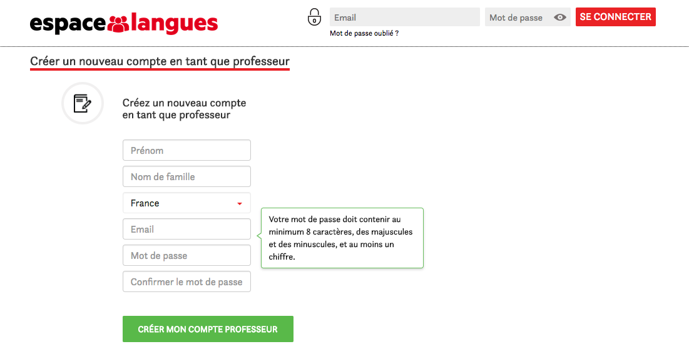<br><br>
		<li>Remplissez le formulaire et cliquez sur <button type="button">Créer mon compte professeur</button>. Vous arrivez alors sur la page ci-dessous :</li>
		<br><br>
		<li>Cliquez sur <button type="button">Valider votre clé KNE</button> sur la barre supérieure. Vous arrivez sur une nouvelle page</li>
		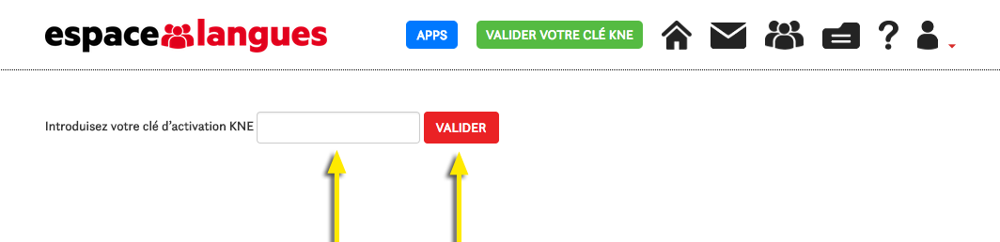<br><br>
		<li>Rouvrez maintenant le mail que vous avez reçu du KNE, copiez votre clé d’activation, puis revenez sur cette page et collez votre clé d’activation dans le champ vide. Enfin, cliquez sur le bouton <button type="button">Valider</button>. Vous verrez apparaître le message de confirmation suivant :</li>
		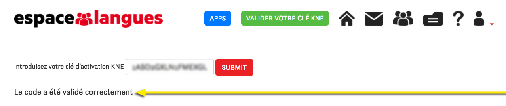<br><br>
		<li>À partir de maintenant, vous avez accès au manuel numérique du pack que vous avez acheté. Pour ce faire, commencez par cliquer sur le logo d’Espace langues, sur la barre supérieure.</li>
		<br><br>
		<li>Enfin, choisissez la langue qui vous intéresse, puis la collection que vous avez achetée, puis le niveau correspondant au pack numérique dont vous avez fait l’acquisition.</li>
		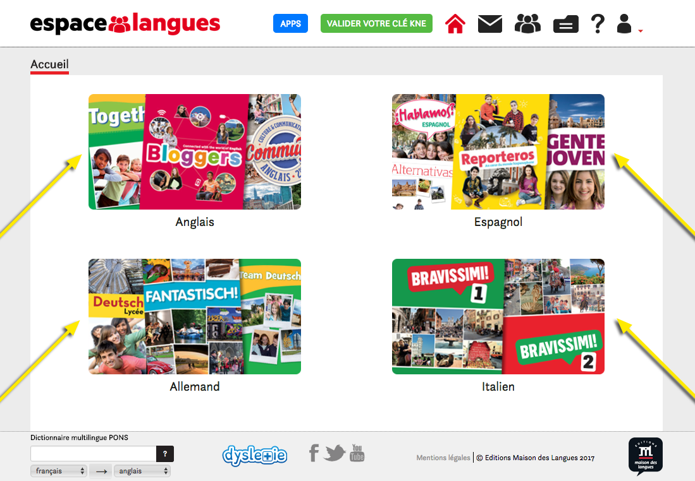<br><br>
		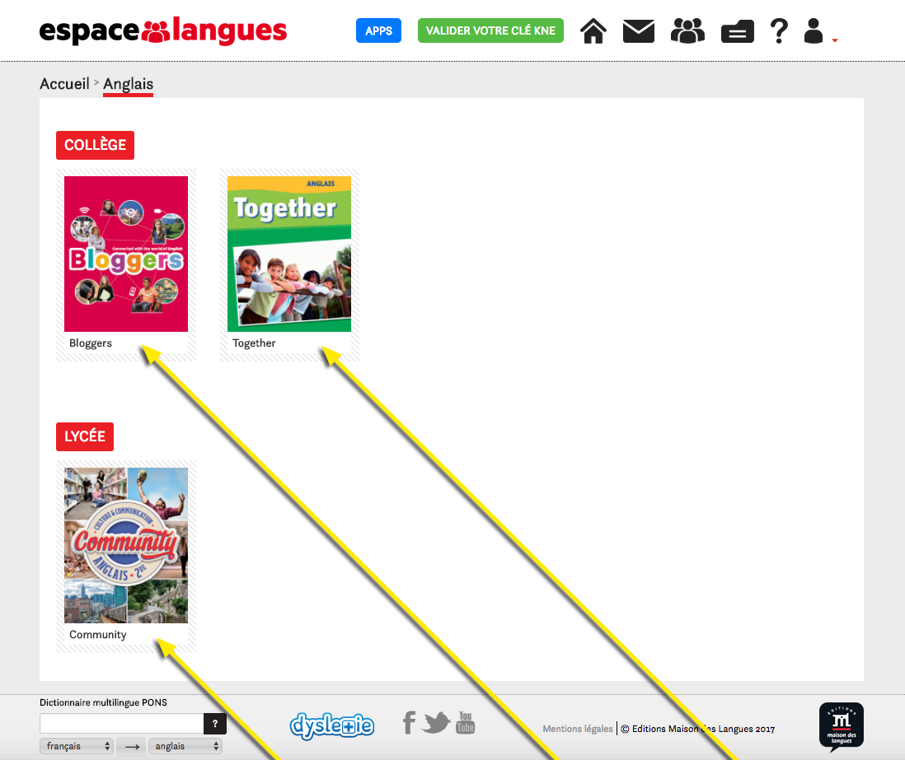<br><br>
		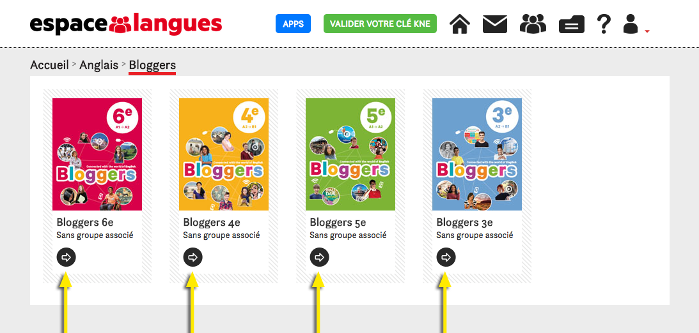<br><br>
		<br><br>
	</ol>
</details>

<!-- 15. Comment obtenir des licences packs numériques élève ? -->
<details>
	<summary class="question">Comment obtenir des licences packs numériques élève ?</summary>
	<p class="answer">
	<ol>
		<li>Qu’est-ce que c’est ?</li>
		<p>Le pack numérique élève s’ouvre sur la plateforme pédagogique Espace langues et permet de naviguer entre les éléments suivants :</p>
			<ul>
				<li>le manuel en version vidéoprojetable ;</li>
				<li>le cahier d’activités en version vidéoprojetable, interactive et autocorrective ;</li>
				<li>les fichiers audio élève au format mp3 ;</li>
				<li>des ressources complémentaires, selon les méthodes ;</li>
				<li>la possibilité de visualiser les résultats obtenus aux différentes activités du cahier et d’accéder aux ressources partagées par son enseignant(e).</li>
			</ul>
		<li>Comment l’établissement peut-il se le procurer ?</li>
		Les packs numériques élève s’achètent sur le site Internet du KNE (www.kiosque-edu.com). Une fois que votre gestionnaire a procédé à l’achat, il reçoit par mail des codes pour s’identifier sur le site du KNE en tant qu’administrateur et :
			<ul>
				<li>récupérer les identifiants des élèves,</li>
				<li>créer des groupes avec ces élèves,</li>
				<li>leur donner accès aux packs numériques achetés.</li>
			</ul>
			<p>C’est donc le gestionnaire de l’établissement qui fournit aux élèves leurs identifiants.</p>
		<li>Combien ça coûte ?</li>
			<table>
				<tr>
					<th colspan="3">Pack numérique téléchargeable :</th>
				</tr>
				<tr>
					<td>Tarif adoptant*</td>
					<td>licence valable 1 an</td>
					<td>3 €</td>
				</tr>
				<tr>
					<td>Tarif non adoptant</td>
					<td>licence valable 1 an</td>
					<td>6 €</td>
				</tr>
			</table>
	</ol>
	<p class="answer"><em>* Pour bénéficier du tarif adoptant, le gestionnaire doit fournir la preuve d’achat du manuel papier pour la classe (20 exemplaires au moins).</em></p>
	<p class="answer"><em>** Offre spéciale rentrée 2018: pour toute adoption à la rentrée 2018, les licences numériques élèves d'un an sont offertes (offre valable pour toute commande passée avant le 31/12/2018) (texte à revoir éventuellement)</em></p>
	</p>
</details>

<!-- 
	FOURTH CATEGORY: Outils de gestions (groupes, messages, notes, ressources...) 
-->

<!-- 16. Pourquoi et comment créer un groupe d’élèves sur Espace langues ? -->
<details>
	<summary class="question">Pourquoi et comment créer un groupe d’élèves sur Espace langues ?</summary>
	<p class="answer">Pour créer un groupe, cliquez sur l’icône Groupes , dans la barre d’outils supérieure. <br />
	Puis, cliquez sur <button type="button">Créer un créer un nouveau groupe</button>. Dans la fenêtre qui se déploie, donnez un nom 
	à votre groupe et choisissez le manuel avec lequel ce groupe-là devra travailler. <br />
	Cliquez enfin sur <button type="button">Créer un créer un nouveau groupe</button>. Votre groupe apparaîtra alors dans la liste des groupes, sur cette même page :
	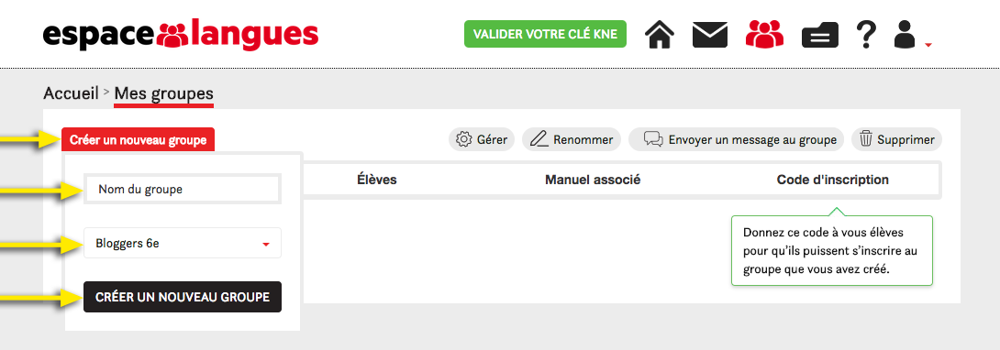<br />
	Sur cette page, vous pourrez voir le nom, le nombre d’élèves, le manuel associé 
	et le code d’inscription de chacun de vos groupes. 
	Vous pourrez également accéder à différentes fonctionnalités à l’aide des boutons <button type="button">Renommer</button>, <button type="button">Supprimer</button> et <button type="button">Envoyer un message au groupe</button>. Enfin, pour voir les élèves inscrits dans un groupe et réaliser d’autres actions (<button type="button">Envoyer un message</button>, <button type="button">Voir l'activité de l'élève</button> et <button type="button">Désinscrire</button>), cliquez sur le bouton <button type="button">Gérer</button>.</p>
	<br />
	<iframe width="280" height="157,5" src="https://www.youtube.com/embed/KZqKufsGEpQ" frameborder="0" allow="autoplay; encrypted-media" allowfullscreen></iframe>
</details>
	 
<!-- 17. Comment inviter mes élèves pour qu’ils s’inscrivent à un groupe ? -->
<details>
	<summary class="question">Comment inviter mes élèves pour qu’ils s’inscrivent à un groupe ?</summary>
	<p class="answer">Pour inviter vos élèves à s’inscrire à un groupe, donnez-leur le code qui apparaît sous la colonne « Code d’inscription » :<br />
	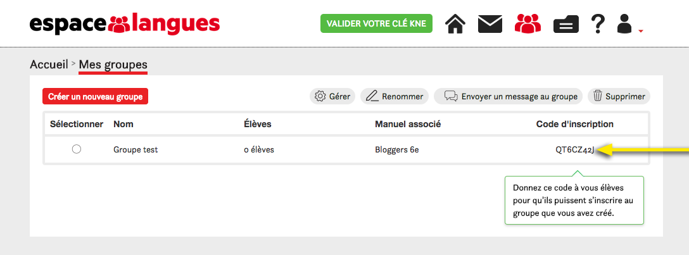<br />
	Vos élèves, une fois connectés à la plateforme Espace langues, devront cliquer eux aussi sur l’icône Groupes. Ils arriveront alors sur la page des groupes, où ils verront un champ « Code d’inscription ». <br />
	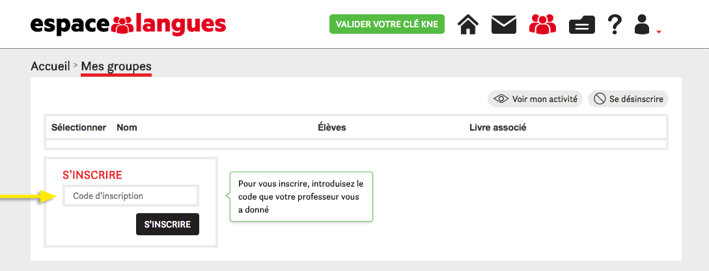<br />
	C’est dans ce champ qu’ils devront taper le code que vous leur aurez donné, avant de cliquer sur <button type="button">S'inscrire</button>.</p>
	<iframe width="280" height="157,5" src="https://www.youtube.com/embed/KZqKufsGEpQ" frameborder="0" allow="autoplay; encrypted-media" allowfullscreen></iframe>
</details>

<!-- 18. Les élèves doivent-ils avoir un compte sur Espace langues pour pouvoir s’inscrire à mes groupes ? -->
<details>
	<summary class="question">Les élèves doivent-ils avoir un compte sur Espace langues pour pouvoir s’inscrire à mes groupes ?</summary>
	<p class="answer">Oui, les élèves doivent obligatoirement avoir un compte sur Espace langues pour pouvoir s’inscrire à l’un de vos groupes. 
	Ce compte ne peut pas être créé directement depuis la plateforme Espace langues (seuls les comptes Enseignant le peuvent). 
	Au moment où votre gestionnaire achète les licences numériques élève sur le site du KNE, il reçoit par mail des identifiants pour se connecter au KNE en tant qu’administrateur et : 
	récupérer les identifiants des élèves,
	créer des classes avec ces élèves-là,
	et leur donner accès aux packs numériques achetés. 
	C’est donc le gestionnaire de centre qui fournira aux élèves leurs identifiants. Grâce à ces identifiants, les élèves peuvent se connecter à Espace langues, puis s’inscrire au groupe que vous aurez créé dans cette plateforme.</p>
</details>

<!-- 19. Comment envoyer un message à mes élèves ? -->
<details>
	<summary class="question">Comment envoyer un message à mes élèves ?</summary>
	<p class="answer">Pour envoyer un message à vos élèves, il faut que ceux-ci soient inscrits dans un groupe. Si tel est le cas, vous avez deux options :
	Allez sur la page Groupes, sélectionnez un groupe, puis cliquez sur <button type="button">Gérer</button>. 
	Puis, sélectionnez un élève et cliquez sur <button type="button">Envoyer un message</button>. Dans la fenêtre qui s’ouvre alors, vous pouvez choisir davantage d’élèves si vous le souhaitez, rédiger votre message et l’envoyer.<br />
	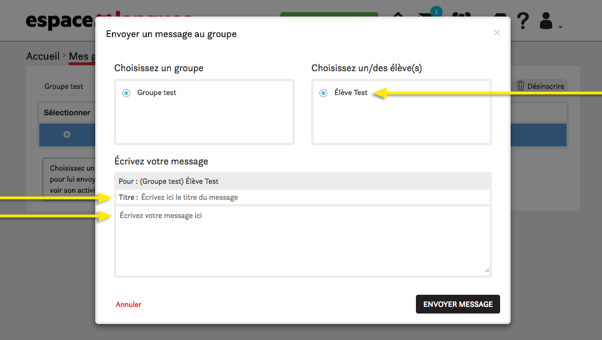<br />

	Cliquez sur l’icône Messages, dans la barre d’outils supérieure.
	Cliquez sur <button type="button">Envoyer un message</button>, choisissez le groupe et les élèves auxquels vous voulez envoyer le message, rédigez-le puis envoyez-le.</p>
	<iframe width="280" height="157,5" src="https://www.youtube.com/embed/1r6eess3bFk" frameborder="0" allow="autoplay; encrypted-media" allowfullscreen></iframe>
</details>

<!-- 20. Les élèves peuvent-ils répondre aux messages que je leur envoie ? -->
<details>
	<summary class="question">Les élèves peuvent-ils répondre aux messages que je leur envoie ?</summary>
	<p class="answer">Vos élèves n’ont pas la possibilité de vous écrire spontanément. En revanche, par défaut, ils peuvent répondre aux messages que vous leur envoyez. Pour modifier ceci, cliquez sur Mon compte dans la barre d’outils supérieure.
	Sur cette page, dans l’encadré « Communication avec mes élèves », cliquez sur <button type="button">Modifier mes préférences</button>. 
	Ensuite, choisissez l’option qui vous convient pour permettre ou non à vos élèves de vous répondre :</p>
	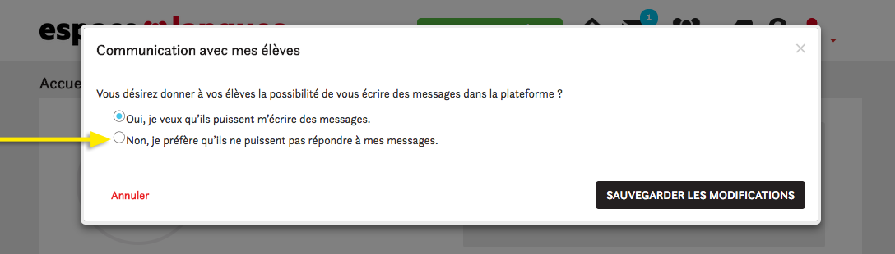<br />
	<iframe width="280" height="157,5" src="https://www.youtube.com/embed/1r6eess3bFk" frameborder="0" allow="autoplay; encrypted-media" allowfullscreen></iframe>
</details>

<!-- 21. Un élève peut-il m’envoyer des pièces jointes avec ses devoirs ? -->
<details>
	<summary class="question">Un élève peut-il m’envoyer des pièces jointes avec ses devoirs ?</summary>
	<p class="answer">Non, cela n’est pas possible.</p>
</details>

<!-- 22. Comment suivre les résultats de mes élèves ? -->
<details>
	<summary class="question">Comment suivre les résultats de mes élèves ?</summary>
	<p class="answer">Pour voir les résultats que vos élèves obtiennent aux exercices autocorrectifs de leur cahier d’activités, allez sur la page des Groupes en cliquant sur l’icône Groupes. 
	Sélectionnez l’un de vos groupes, puis cliquez sur <button type="button">Gérer</button>. Sélectionnez l’élève dont vous voulez voir les résultats, puis enfin cliquez sur <button type="button">Voir l'activité de l'élève</button> :<br />
	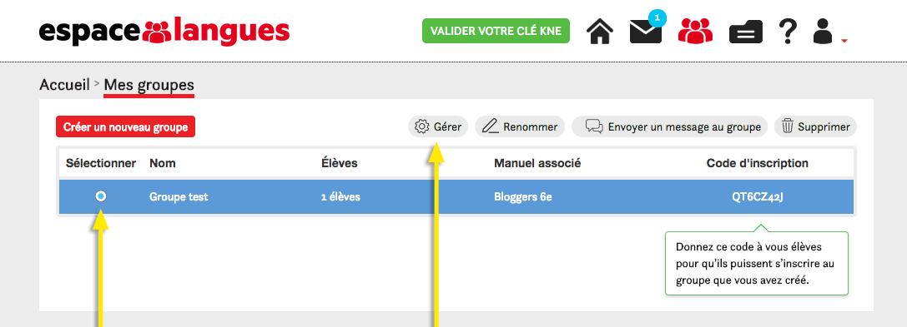<br />

	Vous arriverez alors sur la page « Carnet de bord » du manuel. Sur le Carnet de bord, vous pourrez voir la progression générale de l’élève dans chaque unité, les activités qu’il a faites, les notes qu’il a obtenues (résultats à la première et à la dernière tentative). Vous pourrez aussi :
	voir le détail des réponses correctes/incorrectes à l’intérieur des activités déjà réalisées par l’élève grâce au bouton <button type="button">Voir résultats</button>,
	envoyer une activité comme devoir à un élève en particulier grâce au bouton ,
	exporter un rapport (format PDF) avec toutes les notes obtenues par l’élève dans le cahier d’activités, ainsi qu’une moyenne par unité et dans l’ensemble du cahier d’activités calculées automatiquement grâce au bouton <button type="button">Exporter rapport de l'élève</button>.</p>
	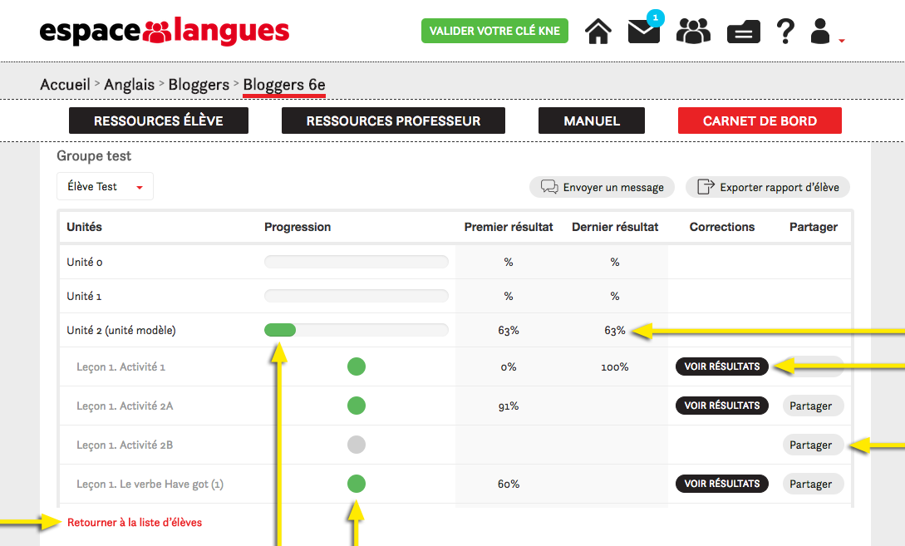<br />
	<iframe width="280" height="157,5" src="https://www.youtube.com/embed/qy0cdB7hu6Q" frameborder="0" allow="autoplay; encrypted-media" allowfullscreen></iframe>
</details>

<!-- 23. Comment partager mes propres ressources avec mes élèves ? -->
<details>
	<summary class="question">Comment partager mes propres ressources avec mes élèves ?</summary>
	<p class="answer">Pour ajouter vos propres ressources à la plateforme Espace langues, cliquez sur l’icône Ressources , dans la barre d’outils supérieure. Cliquez sur <button type="button">Créer une nouvelle liste</button>. Dans la fenêtre qui se déploie, donnez un nom à votre liste de documents favoris, puis cliquez sur le bouton <button type="button">Créer liste</button>. <br />
	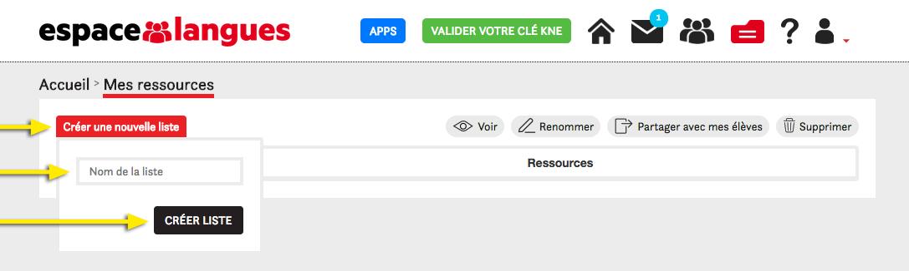<br />

	Vous arrivez ainsi directement dans votre nouvelle liste. Pour y faire apparaître des ressources, cliquez sur <button type="button">Ajouter ressource</button>. Dans la fenêtre qui se déploie, cliquez sur <button type="button">chercher</button> et trouvez la ressource souhaitée dans votre ordinateur. Une fois la ressource sélectionnée, donnez-lui un nom et cliquez sur <button type="button">ajouter</button> :<br />
	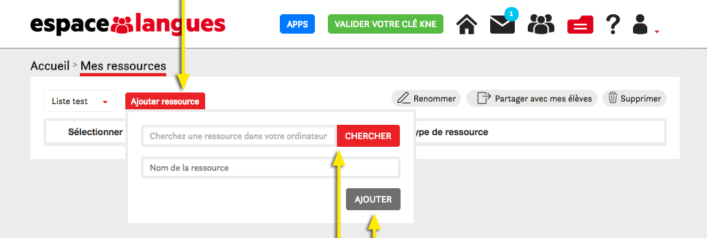<br />

	Une fois votre ressource ajoutée à la liste, vous pourrez la partager avec vos élèves en cliquant sur le bouton.</p>
	<iframe width="280" height="157,5" src="https://www.youtube.com/embed/yzXDXZhzWic" frameborder="0" allow="autoplay; encrypted-media" allowfullscreen></iframe>
	<iframe width="280" height="157,5" src="https://www.youtube.com/embed/ct8awQ-C8uI" frameborder="0" allow="autoplay; encrypted-media" allowfullscreen></iframe>
	<iframe width="280" height="157,5" src="https://www.youtube.com/embed/yoW5GPYmp0U" frameborder="0" allow="autoplay; encrypted-media" allowfullscreen></iframe>
</details>

<a href = "https://cdn.espacelangues.emdl.fr/system/uploads/unity/core/media_file/file/fdde1517-3494-4a21-839c-cc16f61b7d20/plt_el_ug_web.pdf?version=1525707750"><h2>View and Download PDF</h2></a>
</body>
</html>